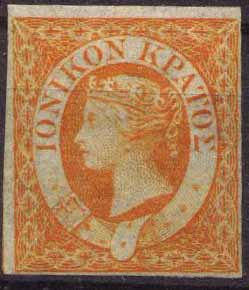
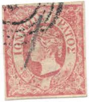
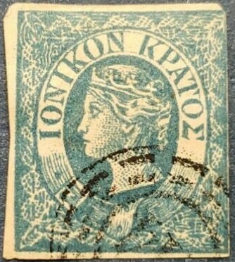
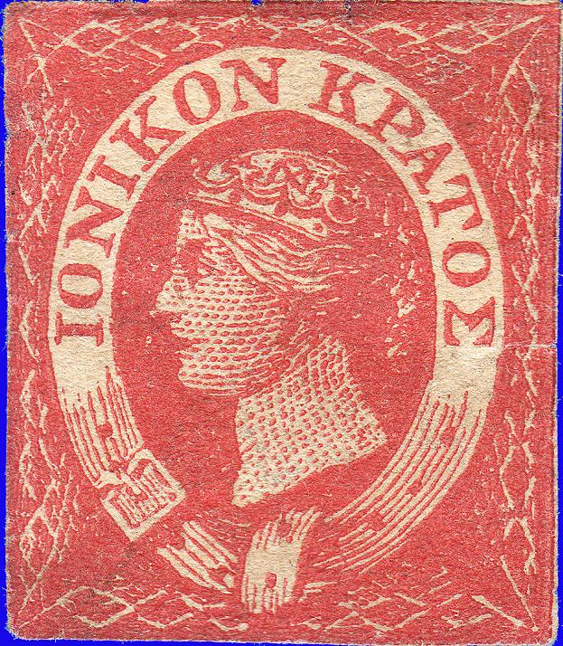
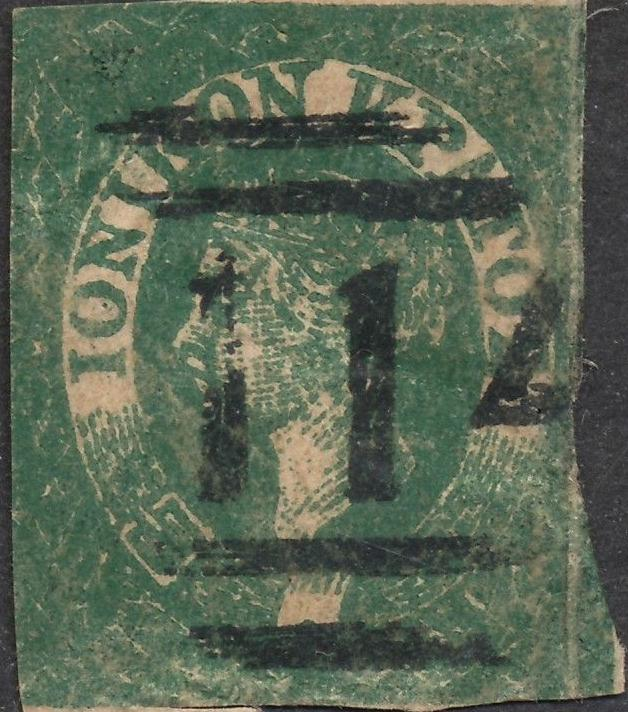
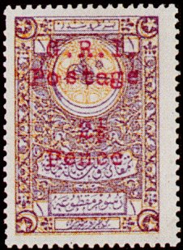

{kind=link}


(Genuine stamps, obtained with permission from the site of Bill Claghorn; forgeries idenfication site http://geocities.com/claghorn1p/)
Iles Ioniennes
Return To Catalogue - Great Britain
Note: on my website many of the
pictures can not be seen! They are of course present in the
catalogue;
contact me if you want to purchase it.
The Ionian Islands consists of the islands of Cephalonia, Corfu and Zante.

(Genuine stamps, obtained with permission from the site of Bill
Claghorn; forgeries idenfication site
http://geocities.com/claghorn1p/)
(1/2 p) orange (1 p) blue (2 p) red
These stamps were no longer valid in 1864.
Value of the stamps |
|||
vc = very common c = common * = not so common ** = uncommon |
*** = very uncommon R = rare RR = very rare RRR = extremely rare |
||
| Value | Unused | Used | Remarks |
| (1/2 p) orange | RR | RRR | |
| (1 p) blue | R | RRR | |
| (2 p) red | R | RRR | |
The only cancelled stamp I have seen sofar with a
"CORFU" cancel, image obtained from a Karamitsos
auction
The '1' watermark seen from the backside of a red stamp
Many forgeries exist of these stamps. The genuine orange stamps don't have a watermark, the blue stamp has a '2' (this stamp was originally intended to serve as a 2 p stamp) and the red stamp has a watermark '1' (this stamp was intended to serve as a 1 p stamp first). According to Album Weeds, the letters of the inscription should not touch each other anywhere. The first "I" of "IONIKON" should be at an equal height as the queen's upper lip. In the background behind the Queen's head very small white points can be seen.
The following forgeries can be easily identified by their cancels (these cancels were never used on the ionian islands):
(Reduced size)
Very similar forgeries, but with no cancel.
The above forgeries are the first forgery of Album Weeds; the letters "KP" join each other at the bottom and the first "I" of "IONIKON" is level with the queens mouth instead of the upper lip. The ornaments outside the ellipse are different from the genuine stamps. These forgeries are lithographed and have no watermark, the background behind the Queen's head is solid. These Spiro forgeries were also offered by Fournier in his 1914 pricelist as second choice forgeries for 1.50 Swiss francs (all three).
A forged "B02" cancel as it can be found in 'The
Fournier Album of Philatelic Forgeries'; I don't know on which
forgeries Fournier used this cancel.
Possibly on the above Spiro forgeries.


The above stamp is the second forgery described in Album Weeds: there is no watermark, it is lithographed and a line is joining the letters of the words "NIKON" and "KPATO" at the upper side. There is a double line in the base of the diadem. In the face of the queen and the backside of the head more differences can be found, for example the shadows of the face and the neck are too heavy with spots in it. There seems to be an improved version of this forgery. Note the bogus cancels of these forgeries (if they are cancelled).
The above blue stamp are Oneglia forgeries. The contour of the head is surrounded by a coloured line. Note the strange shape of the last "S", which has a strange upper part compared to the genuine stamps. The other letters are also slightly different. The cancel on these forgeries is always(?) a numeral '1' cancel. Sometimes the above forgeries are referred to as Panelli forgeries.
The next forgery is quite badly executed:
This could very well be one of the Forgeries
made in India
The same(?) forgery with a "C64" (Vera Cruz, Mexico)
cancel
The next forgeries bear a "B62" cancel (which is a Hong Kong cancel!):
Note further that the Queen has a very sharp nose and that there is a relatively big hole in the belt.
Some other less common forgeries:
Forgery with the facial expression different from the genuine
stamps

Other very primitive forgeries
Forgery with lines connecting the letters.

Very primitive forgery with a forged
"114" cancel.
Another primitive forgery
Long Island is a small Turkish Island (also called Chustan) in the Gulf of Smyrna. English troups occupied the island in Mai 1916. Turkish fiscal stamps of 10 pa, 20 pa and 1 Pi overprinted with "G.R.I Postage" and value exist. Also primitive stamps made with a typewriter with inscription 'G.R.I. Long Island Postage Revenue' exist, about 80 to 1200 pieces have been made. All these stamps are believed to be speculative issues.
Examples of Turkish fiscal stamps overprinted:

Examples of the 'typewriter' stamps:
I have also seen 'SIX PENCE' and '1 SHILLING' in the above design.
{kind=link}
{kind=link}
{kind=link}
{kind=link}
{kind=link}
{kind=link}